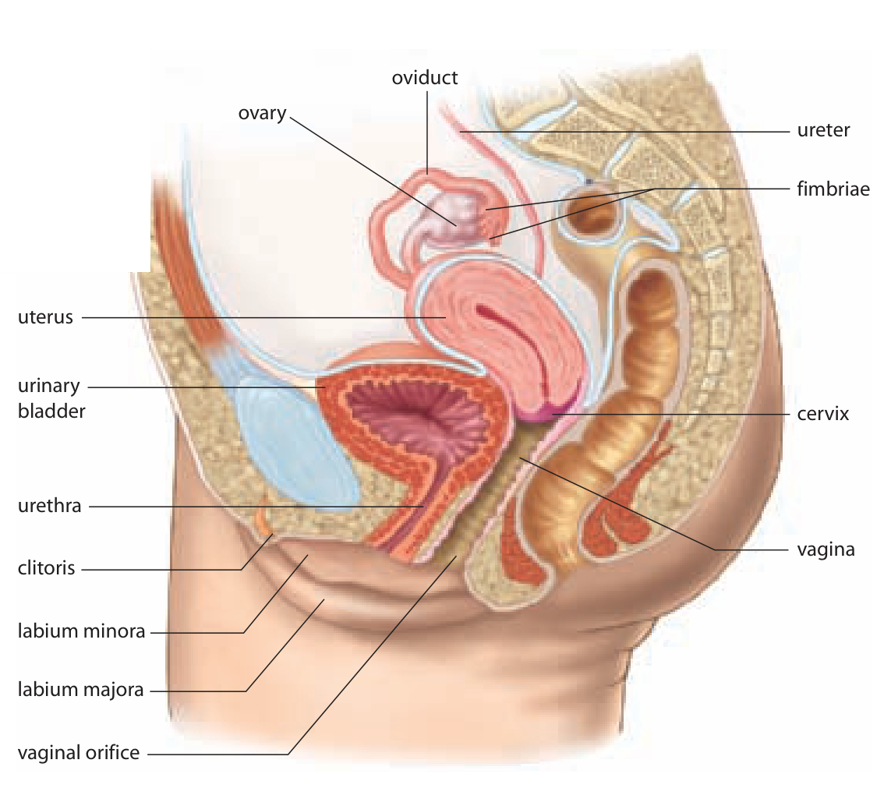
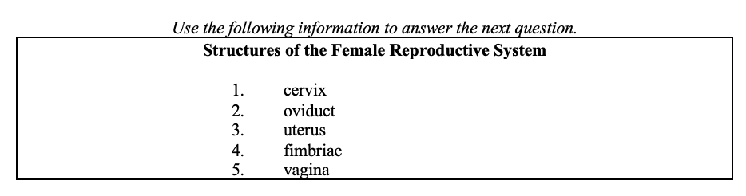

An ovary produces the cell; an oviduct provides a route
An egg and a sperm approach their usual meeting place from different directions. To follow them, begin with the structures rather than with a single arrow called reproduction. Producing a cell, transporting it and supporting later development are different jobs.
An ovary is a female gonad. It contains developing reproductive cells called oocytes and the supporting cells around them. The supporting tissues also release hormones. is the release of a from an ovary. We will use egg as a general name for that reproductive cell, while keeping secondary oocyte as the more precise stage name.
An , also called a Fallopian tube or uterine tube, leads from near an ovary toward the . Its fringed end has . This opening is close to the ovary, rather than forming a sealed pipe attached to it. Fimbriae and movement near the opening help guide the released cell into the tube.
The oocyte does not propel itself with a tail. Cilia, tiny beating projections on cells lining the tube, and coordinated muscular activity help move material toward the uterus. A passage can therefore depend on both an open space and the activity of its tissues.
In the side-view figure, find the ovary near the top, the curved oviduct beside it and the fimbriae near the tube's open end. Follow the oviduct toward the uterus below. The dark lines connect labels to structures; they are not movement arrows. This cut-away view shows positions and relationships, not a photograph of an oocyte travelling.
Female reproductive structures

Locate the oviducts, uterus, cervix and vagina before tracing either gamete’s route. Inquiry into Biology, p. 482.Distinguish the uterus, its lining and its lower opening
The uterus is a muscular organ where development can continue after implantation. Its wall can expand during pregnancy and contract during labour. The is the inner lining of this organ. An organ and one of its tissue layers are different levels of structure.
The endometrium changes during the menstrual cycle. Its blood vessels and glandular tissue help prepare a suitable environment for implantation and early support. Implantation is the attachment and embedding of an early embryo in that lining. A suitable transport route alone does not guarantee a suitable implantation site.
The is the narrow lower region of the uterus, opening into the . The vagina is the passage between the cervix and the outside. It receives during vaginal intercourse and provides a route for menstrual flow and, during vaginal birth, delivery. These connections give the cervix and vagina functions without making them the usual fertilization site.
Use the figure to locate the uterus above the cervix and the vagina continuing below it. The endometrium is not separately named in this crop; it is the lining facing the uterine cavity, not the whole thick wall. The urinary bladder lies nearby and drains through the urethra. The urethra and vagina are separate passages, so do not send sperm through the bladder when tracing the reproductive route.
sheds part of the endometrium, not the entire uterus or its muscular wall. Later hormone explanations will show why support for this lining falls. The cycle is not simply triggered by an egg arriving at a particular point in the passage.
Follow both gametes to the meeting place
After ovulation, the oocyte is guided from the ovary's surface near the fimbriae into an oviduct. Its route begins near the ovary and proceeds toward the uterus. The produce the cells; the oviduct provides the usual site where an oocyte can meet sperm.
Sperm deposited in the vagina move through the cervix and uterus toward an oviduct. Their route approaches from the other end. Fertilization normally occurs in an oviduct when a sperm and oocyte unite their genetic contributions. The word normally identifies the usual anatomical location, rather than claiming that every released oocyte is fertilized.
If fertilization occurs, the initial cell is called a zygote. Early divisions occur during the journey toward the uterus. By the time implantation begins, the developing structure is a multicellular early embryo called a blastocyst. Fertilization and implantation are connected events at different times and places; the single-cell zygote does not immediately implant in the uterus.
An unfertilized oocyte does not continue into embryonic development or implant. When an exercise asks you to trace the connected passages to the outside, distinguish that anatomical route from the survival of an intact cell. The cell's viability is limited; a route diagram is not evidence that it stays alive along every part of the route.
For the optional numbered exercise, read each number's named structure first. Trace the requested passage from the fimbriae through the oviduct, uterus, cervix and vagina, then translate the structure order into the supplied numbers. The output order comes from the question's starting point, not from arranging the number labels from smallest to largest.
Locate the changed function before predicting its effect
Imagine a change in the oviduct. It may interfere with the gametes meeting or with movement toward the uterus. That transport change does not by itself establish that ovarian hormone production has stopped. Hormones travel in the blood; an oocyte and sperm use reproductive passages.
A change to the endometrium concerns the implantation environment rather than the production of an oocyte in an ovary. A change to the cervix concerns passage between the vagina and uterus. Naming the affected structure lets you explain which step is directly threatened without assuming that every reproductive function fails together.
If a model describes one oviduct, keep its prediction limited to that route unless the other side is also specified. An anatomy problem can isolate a mechanism, but it does not supply enough information for a diagnosis of an individual. We will now look inside an ovary to see how the developing cell and its surrounding hormone-producing tissue take different paths after ovulation.
Worked example
Is an open tube enough to establish normal transport?
In a stated classroom model, an oviduct has an open passage and the ovary releases an oocyte normally. The cilia in that oviduct no longer beat effectively. Other information about transport is not supplied. Does the open passage establish that movement toward the uterus will be normal?
- Separate the observations. An open passage describes the space available. Normal ovulation describes release from the ovary. Neither observation measures how the lining moves material.
- Identify the changed job. Ciliary beating helps create movement along the oviduct. Reduced beating can therefore interfere with transport even though no physical blockage is shown.
- Check the strength of the conclusion. Muscular activity also contributes to transport, and the model does not quantify it. We can predict impaired support for movement, not prove that all movement stops or calculate a travel time.
- Keep neighbouring functions separate. The evidence does not show that ovarian hormones stopped or that the endometrium was damaged. Those would require information about other tissues or routes.
Optional application
A second model has normal ovarian hormone release and open oviducts, but sperm cannot pass through the cervix from the vagina. Which step in their route is interrupted, and why do open oviducts alone not solve that problem?
Answer withheld for first attempt
Practise with support
Apply the explanation
Try both questions. Use the hint to revise your thinking after an incorrect answer.
Stop and think
Try this before opening the explanation
Is menstruation the shedding of the whole uterus?
Answer withheld for first attempt
Open required check · Female reproductive structures and the egg pathway
Explain what you have learned
This check counts toward chapter progress. Correct the 2 selections to unlock 2 written explanations. Saving writing records your response; it does not grade its accuracy.
Not started Optional application 3
This is optional written practice. It does not change required progress.

Use the diagram or data with the question.Optional response. Select Save response to collect it. Maximum 5000 characters.